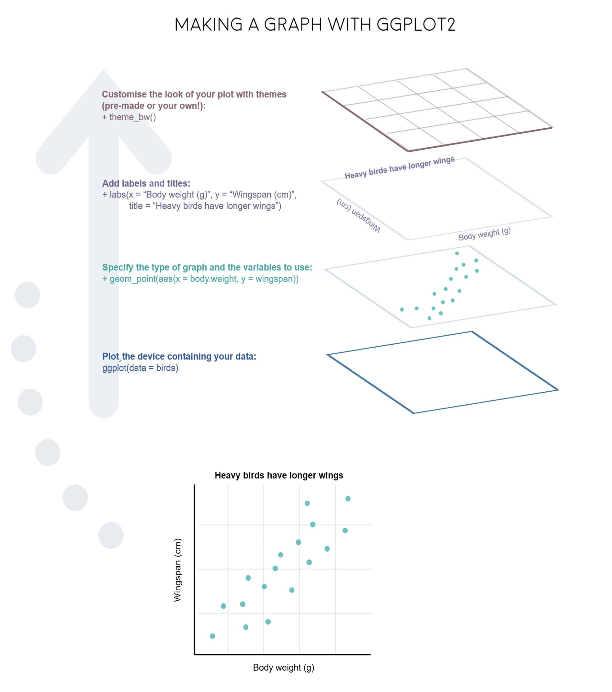

Package Loading
As mentioned within the session setup, load the following packages using the library() function.
library(tidyverse)
library(RColorBrewer)
library(ghibli)
library(palettetown)Introduction
Example Plot:
To give you an example of how to generally plot in R, using ggplot2, we can examine the diamonds data set. This is an extremely common example, but is useful to understand how to structure of how to plot.
# Chunk 1
ggplot(data = diamonds,
mapping = aes(x = price,
y = carat,
colour = cut)) +
# Chunk 2
geom_point() +
# Chunk 3
labs(title = "Diamonds Plot Example",
x = "Price",
y = "Carat")
We can break down the code for this plot into three Chunks.
ggplot() function, this is the core part of any visualization function, and typically contains information such as specification of the data to be used, and the mapping aesthetics. These details however can also be included within Chunk 2.geom specification, details which type of plot you would like to plot. In this case, we are plotting a point chart, or scatter plot.labs(). In this case, specifying the labels which should be included alongside your plot.These three components (that is the ggplot function, the geom specification and additional details) are core components of any data visualization. And can be summed up also in the diagram below.

Alternatively, this code can be written as so, and produce the same results.
# Chunk 1
ggplot() +
# Chunk 2
geom_point(data = diamonds,
mapping = aes(x = price,
y = carat,
colour = cut)) +
# Chunk 3
labs(title = "Diamonds Plot Example",
x = "Price",
y = "Carat")